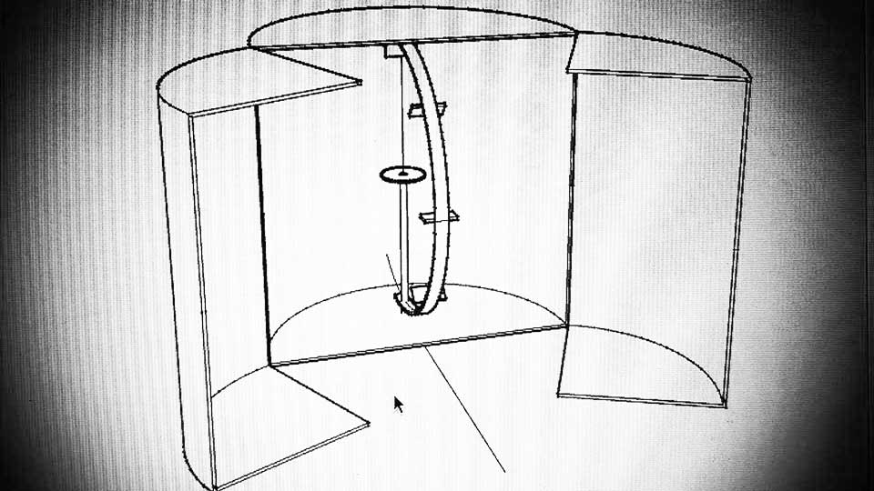

Concept
/// The Photogrammetric Fab Scanner ///
The fab-scanner is a cylindrical box, whit 1 meter of diameter.
It's composed from 2 different parts, that work in direct relationship :
- A - The Light Box : composed of 1 motorized stepper dish + 1 system of LED lights.
- B - The Camera Curved Rail: for the radial movement of the photographic camera.

The object to scan will be set on the rotating dish.
Whit the lock down of the back doors of the scanner, the process starts: the led lights on, and the photographic camera will take a picture each 10° angle of the rotation support (36 photos).
Once the 360°rotation completed, the camera moves in the new positon, and the process rotation / shooting start again.
The radial movement increases each 15°.
The complete process it's composed from 10 different positions in the camera rail:
0° / +15°/ +30° / +45° / +60° / +75°/ -15°/ -30°/ -45° (90° require just 1 photo).
Each of it, corresponds to a 360° rotation dish and a set of 36 photos.

Post Production Of Images
With the help of a specific photogrammetric software like VSFM for creating the dense cloud and MeshLab for develop the masch, it will be possible to create and edit 3D models, that will be subsequently printed.
Resurces
For the camera Curved Rail I will make reference to the project of Begle Moritz a 2014 Fab Academy Projects.
Component List (not exhaustive)
1 Computer
1 Consumer photo camera
1 Micro-controller
2 H Bridge
2 Stepper Motors
1 Power pack
N Led
N Mosfet